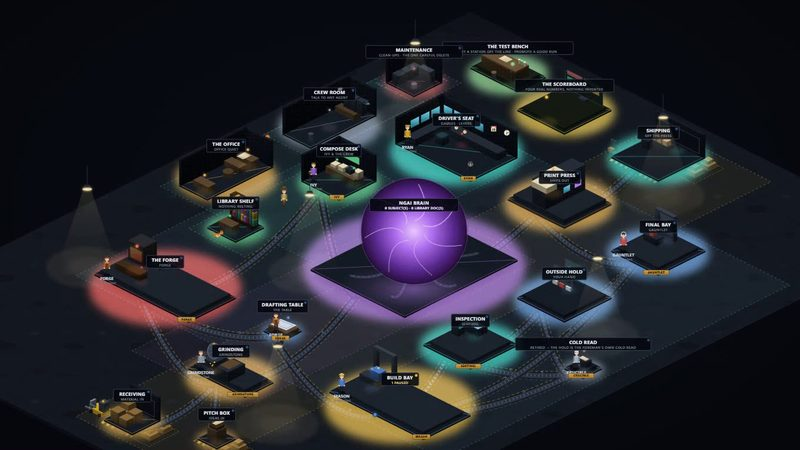

01
La fábrica
La fábrica · escribe documentos de capacitación
Qué hace La fábrica y por qué le sirve
Un simulador para empresas que trabajan con agentes de IA. Usted organiza la planta, agrega estaciones, le asigna a cada una un trabajador y un modelo, y traza las bandas transportadoras entre ellas. Ve toda la empresa, funcionando, como una imagen. Alguien que nunca ha usado IA puede hacerlo con clics y disfrutarlo. Nuestra propia línea escribe documentos de capacitación así: un agente redacta, un segundo verifica, una persona revisa, se hace una auditoría final, y nada sale sin el sí de una persona. También puede esbozar con nosotros su propio proceso en la planta, y nosotros lo convertimos en una línea que funciona. El video la muestra funcionando.
El trabajo de prueba de la propia fábrica recorriendo toda la línea, de la primera estación a la última. Es trabajo de demostración: no se gastó dinero. (Si ve al gato persiguiendo al ratón, es real. Agregamos pequeños detalles solo por diversión.)
En el video, los nombres de las estaciones están en inglés.
